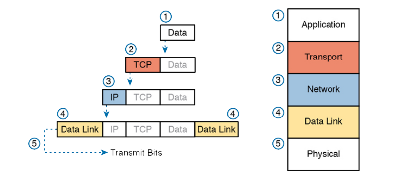

Als we het TCP/IP verhaal zouden moeten samenvatten in één woord dan zou dat woord misschien ‘encapsulatie’ kunnen zijn. Dit principe zien we doorheen de vier bovenste lagen terugkeren en het houdt in dat er bij iedere laag een stukje data aan toegevoegd wordt.
Alle toegevoegde data zorgt ervoor dat applicaties tegen elkaar kunnen praten (= informatie uitwisselen), over verschillende netwerken heen.
Die toegevoegde data is natuurlijk onze TCP of UDP header, de IP header en de datalink header en trailer informatie. Grafisch kan je dit zo voorstellen:

Laat ons het verhaal beginnen bij de applicatie laag: een programma wil communiceren met een ander programma op een andere computer.
De data is de boodschap die het programma wil overbrengen naar het programma op de andere machine. Dit kan een e-mail zijn, of een bestand of een constante datastroom zoals een video call. Laat ons er even van uitgaan dat we aan het surfen zijn naar https://www.hogent.be .
Onze applicatie (bijvoorbeeld Microsoft Edge) zal dus gebruik moeten maken van HTTPS om te kunnen communiceren met de webserver.
De eerstvolgende laag is de transport laag. Hier moeten we eerst kiezen welk protocol (TCP of UDP) we zullen gebruiken. In dit geval is TCP het meest geschikt. De tweede keuze is het destination poortnummer. Voor HTTPS is dat 443. Ons besturingssysteem kiest zelf een semi willekeurig source poortnummer.
Vervolgens komt de IP header er aan te pas. Tot nu toe beschikken we enkel over een domeinnaam wat betekent dat we eerst een DNS lookup zullen moeten doen om het destination IP adres te weten te komen. Op het moment van schrijven was dat 193.190.173.132. Mijn source IP adres is op dit moment 192.168.1.54. De router zal dit straks voor mij veranderen naar mijn publiek IP adres want op mijn netwerk wordt er aan NAT gedaan. Instellingen voor QOS hoeven niet gewijzigd te worden, dit verkeer is niet echt prioritair.
Dan komen we in de datalink laag terecht, hier wordt mijn source MAC adres toegevoegd aan het pakket. Op dit moment is het destination MAC adres nog niet gekend want het pakket is bestemd voor buiten het netwerk. In plaats daarvan wordt het destination MAC adres ingevuld met het MAC adres van de next hop router. In mijn geval is dat het MAC adres mijn thuisrouter. Eénmaal daar aangekomen zal het destination MAC adres terug wijzigen naar het destination MAC adres van de volgende hop router. Dit blijft gewijzigd worden tot het zijn bestemming heeft bereikt. Het source MAC adres blijft ongewijzigd.
De laatste laag is de fysieke laag. Alle bits van alle voorgaande lagen worden omgezet naar signaalniveaus en op de ether of op een kabel geplaatst.
Bij de ontvanger worden de lagen doorlopen in omgekeerde volgorde.